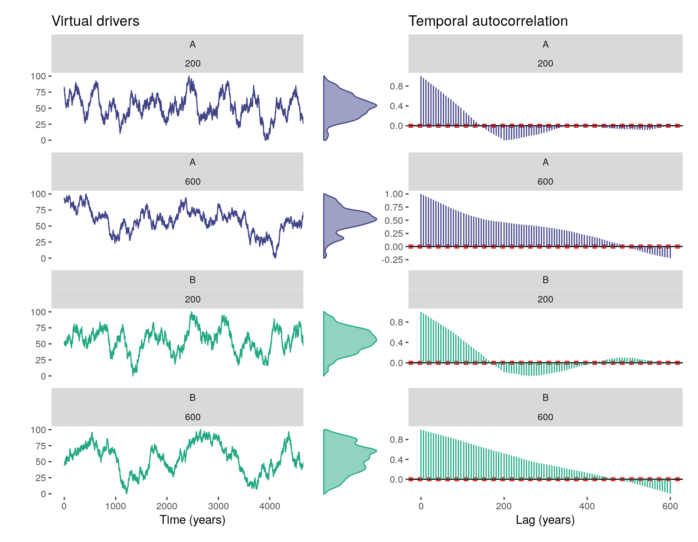
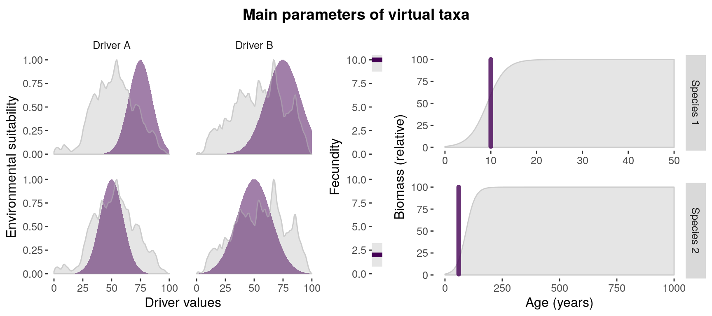
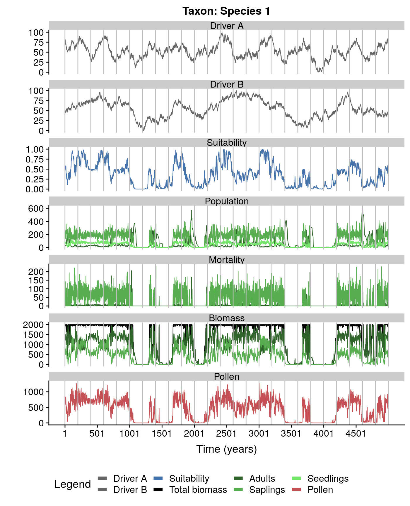
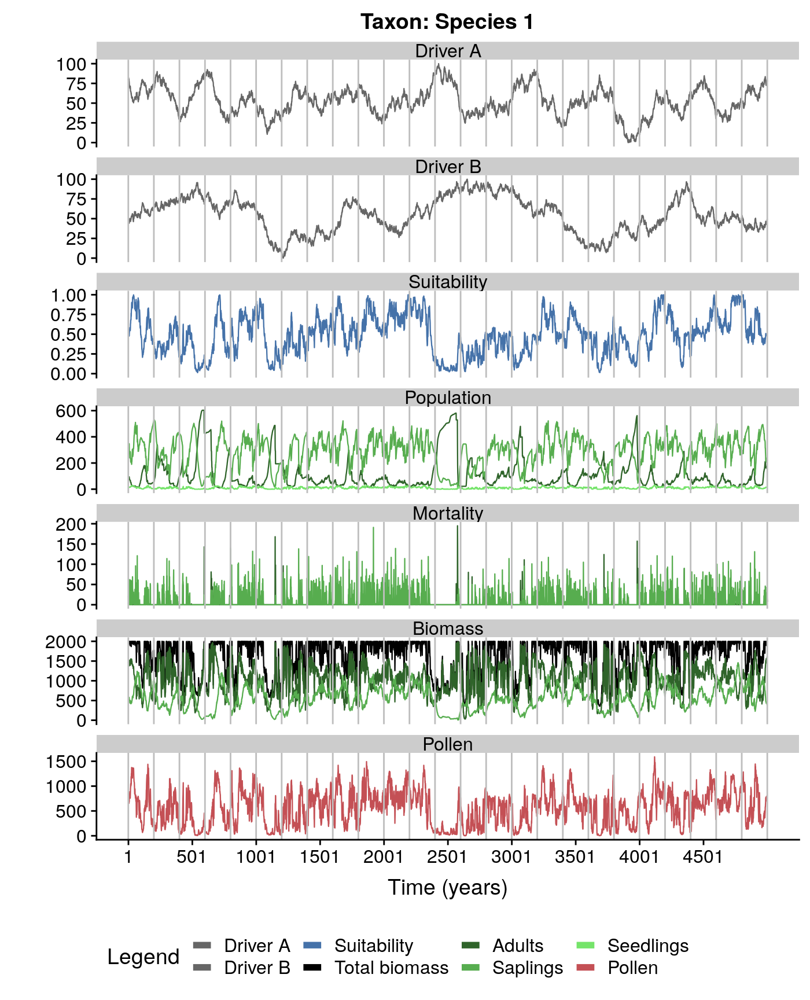
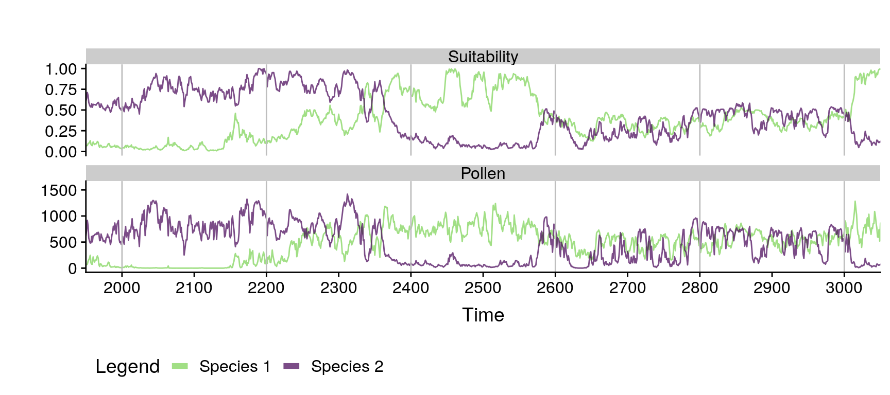
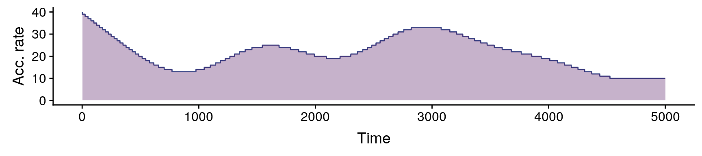
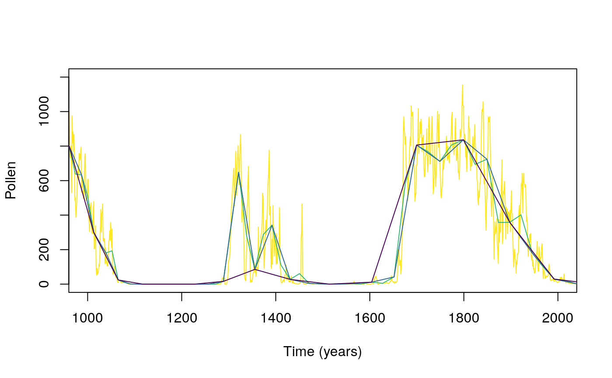
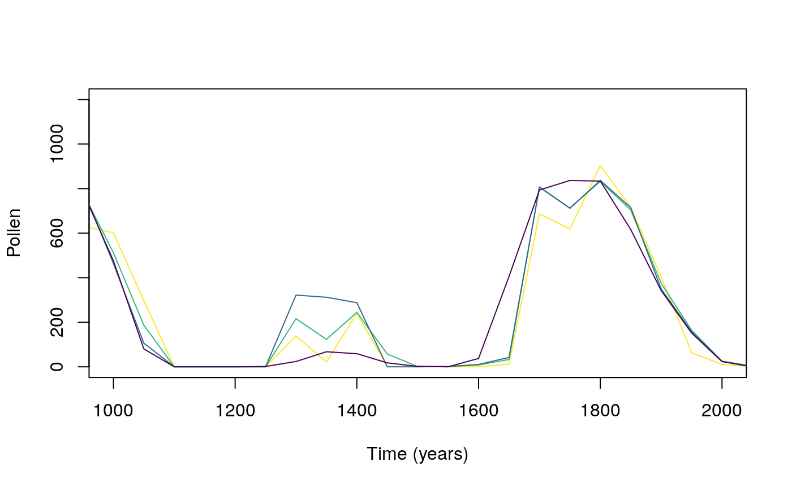

The goal of virtualPollen is to provide the tools to simulate pollen curves over millenial time-scales generated by virtual taxa with different life traits (life-span, fecundity, growth-rate) and niche features (niche position and breadth) as a response to virtual environmental drivers with a given temporal autocorrelation. It furthers allow to simulate specific data properties of fossil pollen datasets, such as sediment accumulation rate, and depth intervals between consecutive pollen samples. The simulation outcomes are useful to better understand the role of plant traits, niche properties, and climatic variability in defining the shape of pollen curves.
You can install the released version of virtualPollen from GitHub or soon from CRAN with:
The basic workflow consists of the following steps:
1. Generate virtual drivers with simulateDriverS. The user can define a random seed, a time vector, length of the autocorrelation structure of the driver, minimum and maximum values, and names of the drivers. Note that the final length of the temporal autocorrelation is only approximate, and that time runs from left to right, meaning that older samples have lower time values.
#generating two drivers with different autocorrelation lengths
myDrivers <- simulateDriverS(
random.seeds=c(60, 120),
time=1:5000,
autocorrelation.lengths=c(200, 600),
output.min=c(0,0),
output.max=c(100, 100),
driver.names=c("A", "B"),
filename=NULL
)
#checking output
str(myDrivers)
#> 'data.frame': 20000 obs. of 4 variables:
#> $ time : int 1 2 3 4 5 6 7 8 9 10 ...
#> $ driver : chr "A" "A" "A" "A" ...
#> $ autocorrelation.length: num 200 200 200 200 200 200 200 200 200 200 ...
#> $ value : num 79.3 82.4 79.3 77.4 80.7 ...
#note that individual drivers can be created
#with the function simulateDriver as well2. Define the traits of the virtual taxa. Note that the dataframe with the parameters can be either filled with numeric vectors, or manually, by using the function editData. Please, check the help of the function parametersDataframe and the vignette to better understand the meaning of the traits.
#generating template of the dataframe
myParameters <- parametersDataframe(rows=2)
#checking columns in parameters
str(myParameters)
#> 'data.frame': 2 obs. of 16 variables:
#> $ label : logi NA NA
#> $ maximum.age : logi NA NA
#> $ reproductive.age : logi NA NA
#> $ fecundity : logi NA NA
#> $ growth.rate : logi NA NA
#> $ pollen.control : logi NA NA
#> $ maximum.biomass : logi NA NA
#> $ carrying.capacity : logi NA NA
#> $ driver.A.weight : logi NA NA
#> $ driver.B.weight : logi NA NA
#> $ niche.A.mean : logi NA NA
#> $ niche.A.sd : logi NA NA
#> $ niche.B.mean : logi NA NA
#> $ niche.B.sd : logi NA NA
#> $ autocorrelation.length.A: logi NA NA
#> $ autocorrelation.length.B: logi NA NA
#filling it with vectors
myParameters[1,] <- c("Species 1", 50, 10, 10, 0.5, 0, 100, 2000, 0.5, 0.5, 75, 10, 75, 15, 200, 600)
myParameters[2,] <- c("Species 2", 1000, 60, 2, 0.05, 0, 100, 2000, 0.5, 0.5, 50, 10, 50, 15, 200, 600)
#fixing column types
myParameters <- fixParametersTypes(x = myParameters)
#> Checking taxon Species 1
#> Checking taxon Species 2
#visualizing main parameters
parametersCheck(parameters = myParameters,
species = "all",
drivers = myDrivers)
3. Simulate population dynamics and pollen productivity of the virtual taxa.
#simulating population dynamics
mySimulation <- simulatePopulation(parameters = myParameters,
species = "all",
drivers = myDrivers)
#> Simulating taxon: Species 1
#> Simulating taxon: Species 2
#mySimulation is a list with two dataframes
#let's look at the first one
mySimulation.df <- mySimulation[[1]]
str(mySimulation.df)
#> 'data.frame': 5500 obs. of 14 variables:
#> $ Time : int -500 -499 -498 -497 -496 -495 -494 -493 -492 -491 ...
#> $ Pollen : num 2000 1784 1684 1400 1300 ...
#> $ Population.mature : num 20 18 17 14 13 9 7 5 5 4 ...
#> $ Population.immature : num 0 124 147 251 218 285 248 212 163 143 ...
#> $ Population.viable.seeds: num 199 178 168 139 129 89 69 49 49 39 ...
#> $ Suitability : num 1 0.991 0.991 1 1 ...
#> $ Biomass.total : num 2000 2000 1998 1998 1994 ...
#> $ Biomass.mature : num 2000 1800 1700 1400 1300 ...
#> $ Biomass.immature : num 0 200 298 598 694 ...
#> $ Mortality.mature : num 56 0 1 0 0 1 1 0 0 1 ...
#> $ Mortality.immature : num 20 75 155 64 172 62 126 105 98 69 ...
#> $ Driver.A : num NA NA NA NA NA NA NA NA NA NA ...
#> $ Driver.B : num NA NA NA NA NA NA NA NA NA NA ...
#> $ Period : Factor w/ 2 levels "Burn-in","Simulation": 1 1 1 1 1 1 1 1 1 1 ...
#note that "Time" has negative values
#they define a burn-in period used
#to warm-up the simulation.
#can be removed with:
mySimulation.df <- mySimulation.df[mySimulation.df$Time > 0, ]
#plotting the simulation
plotSimulation(simulation.output = mySimulation,
line.size = 0.4)
#comparing pollen curves for a given time
compareSimulations(simulation.output = mySimulation,
species = "all",
columns = c("Suitability", "Pollen"),
time.zoom = c(2000, 3000),
text.size = 14)
4. Generate a virtual accumulation rate. Note that virtual accumulation rates generated by the function simulateAccumulationRate are not intended to be realistic (similar to existing accumulation rate curves), but to provide the means to distort the pollen data in similar ways as real accumulation rate curves do. Still, the users can use their own accumulation rates, as long as they have the same estructure as the output of simulateAccumulationRate.
#simulationg accumulation rate
myAccumulationRate <- simulateAccumulationRate(
seed = 50,
time = 1:5000,
output.min = 10,
output.max = 40,
direction = -1,
plot = TRUE
)
#checking the output
str(myAccumulationRate)
#> 'data.frame': 5000 obs. of 3 variables:
#> $ time : int 1 2 3 4 5 6 7 8 9 10 ...
#> $ accumulation.rate: num 40 39 39 39 39 39 39 39 39 39 ...
#> $ grouping : num 1 1 1 1 1 1 1 1 1 1 ...
#all samples in mySimulation with the same grouping variable
#are to be aggregated into the same centimeter (in the next step)5. Apply the virtual accumulation rate to the simulation, and sample the outcome at different depth intervals.
#applying accumulation rate and
#sampling at: every cm, 2 cm and 3 cm between samples
mySimulation.aggregated <- aggregateSimulation(
simulation.output = mySimulation,
accumulation.rate = myAccumulationRate,
sampling.intervals = c(2,4)
)
#the output is a matrix-like list
#rows are simulated taxa
#first column is the original data
#second column is the data aggregated by the accumulation rate
#rest of columns represent sampling intervals
#comparing data of the first row
plot(mySimulation.aggregated[[1,1]]$Time,
mySimulation.aggregated[[1,1]]$Pollen,
type = "l",
xlim = c(1000, 2000),
ylim = c(0, 1200),
ylab = "Pollen",
xlab = "Time (years)",
col=viridis(4)[4])
lines(mySimulation.aggregated[[1,2]]$Time,
mySimulation.aggregated[[1,2]]$Pollen,
col=viridis(4)[3])
lines(mySimulation.aggregated[[1,3]]$Time,
mySimulation.aggregated[[1,3]]$Pollen,
col=viridis(4)[2])
lines(mySimulation.aggregated[[1,4]]$Time,
mySimulation.aggregated[[1,4]]$Pollen,
col=viridis(4)[1])
6. Optional: re-interpolate the data into a regular time grid. Comparing the different pollen curves through methods such as regression requires them to be in the same temporal grid (a.k.a, have the same number of cases). The function toRegularTime handles that seamlessly.
#interpolating at 50 years resolution.
mySimulation.regular <- toRegularTime(
x = mySimulation.aggregated,
time.column = "Time",
interpolation.interval = 50,
columns.to.interpolate = c("Suitability", "Pollen")
)
#> Warning in sqrt(sum.squares/one.delta): NaNs produced
#> Warning in sqrt(sum.squares/one.delta): NaNs produced
#> Warning in sqrt(sum.squares/one.delta): NaNs produced
#> Warning in sqrt(sum.squares/one.delta): NaNs produced
#> Warning in sqrt(sum.squares/one.delta): NaNs produced
#> Warning in sqrt(sum.squares/one.delta): NaNs produced
#> Warning in sqrt(sum.squares/one.delta): NaNs produced
#comparing interpolated data
plot(mySimulation.regular[[1,1]]$Time,
mySimulation.regular[[1,1]]$Pollen,
type = "l",
xlim = c(1000, 2000),
ylim = c(0, 1200),
ylab = "Pollen",
xlab = "Time (years)",
col=viridis(4)[4])
#note that this function modifies the original dataset!
lines(mySimulation.regular[[1,2]]$Time,
mySimulation.regular[[1,2]]$Pollen,
col=viridis(4)[3])
lines(mySimulation.regular[[1,3]]$Time,
mySimulation.regular[[1,3]]$Pollen,
col=viridis(4)[2])
lines(mySimulation.regular[[1,4]]$Time,
mySimulation.regular[[1,4]]$Pollen,
col=viridis(4)[1])